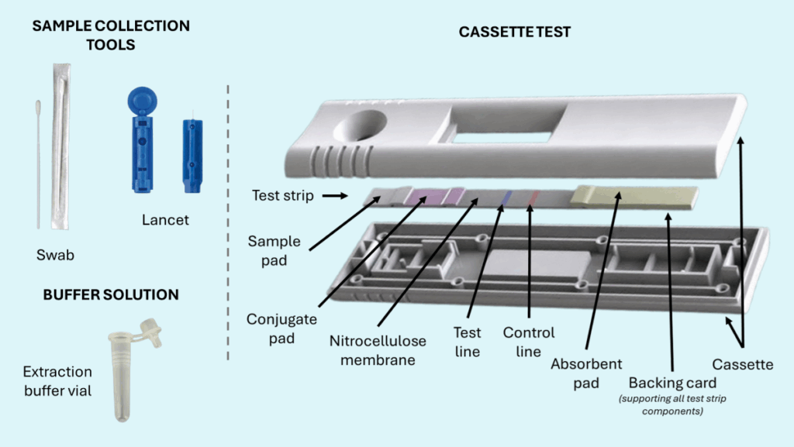

A gold standard, or reference method, is the best available test, or combination of tests, for deciding whether an animal is infected. We treat its result as the "true" status.
What we use it for: to evaluate a new test, called the index test. We compare the index test with the reference result in the same animals. This gives the 2×2 table and the sensitivity and specificity from section 01.
Sometimes we compare two tests but do not know which one is right. Then we ask a simpler question: how often do the two tests give the same result?
Test agreement is the share of animals with the same result on both tests (both positive or both negative). It is easy to calculate, but part of it happens by chance. Two tests that both call most animals negative will agree often, even if neither is any good.
The kappa coefficient (κ) corrects for this. It measures agreement beyond chance. Kappa is 1 for perfect agreement, 0 when agreement is no better than chance, and negative when agreement is worse than chance.
Put the results of the two tests in a 2×2 table. Let a, b, c and d be the four cells, and N the total.
| Test B positive | Test B negative | Total | |
|---|---|---|---|
| Test A positive | a | b | a + b |
| Test A negative | c | d | c + d |
| Total | a + c | b + d | N |
Two tests are used on 100 cattle.
| Test B positive | Test B negative | Total | |
|---|---|---|---|
| Test A positive | 40 | 10 | 50 |
| Test A negative | 5 | 45 | 50 |
| Total | 45 | 55 | 100 |
Po = (40 + 45) ÷ 100 = 0.85 (85% agreement)
Pe = [(50 × 45) + (50 × 55)] ÷ 100² = (2,250 + 2,750) ÷ 10,000 = 0.50
κ = (0.85 − 0.50) ÷ (1 − 0.50) = 0.35 ÷ 0.50 = 0.70
The tests agree on 85% of animals. Half of that agreement is expected by chance, so kappa is 0.70.
| Kappa | Agreement beyond chance |
|---|---|
| below 0 | Poor (worse than chance) |
| 0.00 – 0.20 | Slight |
| 0.21 – 0.40 | Fair |
| 0.41 – 0.60 | Moderate |
| 0.61 – 0.80 | Substantial |
| 0.81 – 1.00 | Almost perfect |
These ranges follow Landis and Koch (1977). In the example, κ = 0.70 is substantial agreement.
Source. Jauhari et al. (2024), World Vet J 14(1):33–37. Open access.
Background. Foot-and-mouth disease (serotype O, lineage O/ME-SA/Ind-2001e) returned to Indonesia in May 2022. Control programmes need a serological test that can tell infected animals from vaccinated ones. Antibodies to non-structural proteins (NSP) can do this. The indirect NSP ELISA works, but it needs time, trained staff and laboratory equipment. A lateral flow assay (LFA) is a simple, portable strip that gives a result in 10–15 minutes.
Objective. To find out how well the LFA can replace the indirect ELISA, by comparing the two tests on stored sera. The authors report sensitivity, specificity and kappa, with the indirect ELISA as the reference.

Index test. PMKit Ab (Tekad Mandiri Citra), an anti-NSP lateral flow strip in a competitive format. Serum is applied and the strip is read after 10–15 minutes. A coloured T line means negative. No T line means positive.
Reference method. Indirect ELISA, IDEXX CHEKIT FMD-3ABC bo-ov. Manufacturer reading: below 20% negative, 20–30% ambiguous, above 30% positive. The LFA has no ambiguous zone.
Samples. Preserved sera from beef and dairy cattle in provinces with no earlier FMD vaccination, already tested by ELISA for monitoring. Breed codes: FH Friesian Holstein, SC Simmental crossbreed, OC Ongole.
| Serum | Breed | Province | LFA | ELISA % | ELISA reading |
|---|
Follow the authors: ELISA ambiguous results are grouped with negative. Use the filters in the Table 2 box to count the sera.
Use the 2×2 table from Exercise 2.1 and the kappa steps above.
Prepare a presentation that answers Exercises 2.1 and 2.2. Suggested slides: